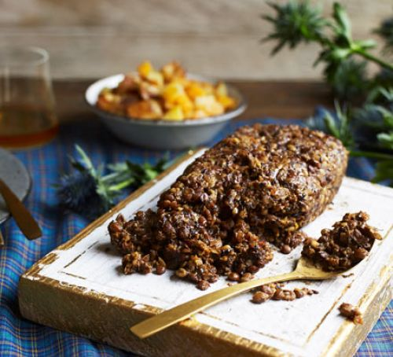

-


Barnacles taste familiar, and if you can get over how strange and unappealing a plate of them can look, you may also come to understand why the Spanish love them so. The rock barnacle, or picoroco, lives in a shell that looks like a miniature volcano. It tastes like crab to me, like scallops to others. Gooseneck barnacles, or percebes, are similar in texture to octopus or the neck of the soft-shell clam. To me they taste intensely of the sea. But John Rowley, a seafood marketing specialist in Seattle who used to harvest them on the Washington coast, says they are as sweet as crab meat, a description offered by others that eludes me. Perhaps those I tasted, from Spain and Peru, were not as fresh as Mr. Rowley's. Or maybe some people cook them for too long. The suggested time varies from 30 seconds to five minutes.